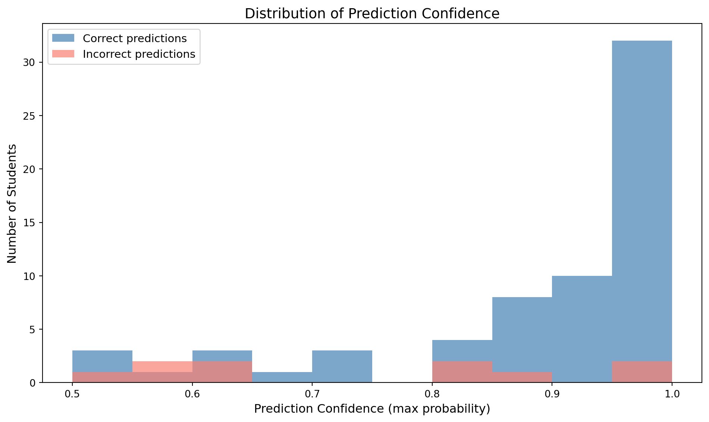

Week 7 Demo: Uncertainty Estimates from Classifiers
Modified
February 16, 2026
Introduction
So far in this course, every time we’ve used a classifier, we’ve asked one question: what does the model predict? We call .predict() and get back a label (“pass” or “fail,” “stay” or “churn”). We call .score() and get back a single accuracy number that tells us how often those predictions are correct.
But .predict() only gives us the model’s final answer. It doesn’t tell us how confident the model is in that answer. Consider two students who are both predicted to fail:
Student A: The model is 95% sure this student will fail
Student B: The model is 52% sure this student will fail
.predict() returns “fail” for both students, but these are very different situations. Student A shows clear signs of struggling, while Student B is essentially a coin flip. If you were an academic advisor deciding who to contact for extra support, you’d probably treat these two students very differently, and you’d want to know which situation you’re dealing with.
This week, we learn how to ask classifiers a richer question: how confident are you in each prediction? Scikit-learn provides two methods for this:
predict_proba returns probability estimates (values between 0 and 1 that are easy to interpret)
decision_function returns raw confidence scores (values on an arbitrary scale that are harder to interpret)
Both go beyond the simple yes/no answer of .predict() and reveal the model’s level of certainty.
What This Demo Covers
This demo covers: - Using predict_proba to get probability estimates for each class - Interpreting what the probability columns mean and how they relate to .predict() - Using decision_function to get raw confidence scores - Understanding the difference between predict_proba and decision_function - Why prediction confidence matters for real-world decisions
The textbook then shows you: - These methods applied to GradientBoostingClassifier with 2D visualizations - How uncertainty estimates extend to multiclass problems (more than two classes) - The concept of model calibration (when reported probabilities match actual outcomes) - A complete summary of all supervised learning algorithms from Chapter 2
Part 1: Creating the Dataset
This section uses the same student performance dataset from Weeks 3 and 5. Using the same dataset lets us focus on the new methods without learning a new domain.
import numpy as npimport pandas as pdimport matplotlib.pyplot as pltfrom sklearn.model_selection import train_test_split# Create reproducible random datarng = np.random.default_rng(42)n =300df = pd.DataFrame({"attendance": rng.integers(60, 101, n),"homework_rate": rng.integers(50, 101, n),"quiz_avg": rng.integers(40, 101, n),"exam_avg": rng.integers(40, 101, n),})# Create final score with a realistic formula plus noisebase_score = (0.2*df["homework_rate"] +0.3*df["quiz_avg"] +0.5*df["exam_avg"])noise = rng.normal(0, 5, n)df["final_score"] = (base_score + noise).round(0)# Create pass/fail classification targetdf["pass_fail"] = np.where(df["final_score"] >=70, "pass", "fail")print(f"Dataset size: {len(df)} students")print(f"Features: attendance, homework_rate, quiz_avg, exam_avg")print(f"Target: pass_fail (pass if final_score >= 70, otherwise fail)\n")print("Class distribution:")print(df["pass_fail"].value_counts())print()df.head(10)
Dataset size: 300 students
Features: attendance, homework_rate, quiz_avg, exam_avg
Target: pass_fail (pass if final_score >= 70, otherwise fail)
Class distribution:
pass_fail
pass 157
fail 143
Name: count, dtype: int64
attendance
homework_rate
quiz_avg
exam_avg
final_score
pass_fail
0
63
68
77
40
63.0
fail
1
91
92
87
42
64.0
fail
2
86
50
85
53
64.0
fail
3
77
95
48
93
68.0
fail
4
77
77
90
67
70.0
pass
5
95
57
72
83
73.0
pass
6
63
65
59
65
58.0
fail
7
88
78
71
50
65.0
fail
8
68
66
98
62
84.0
pass
9
63
55
92
45
55.0
fail
The dataset:
This is the same 300-student dataset from Weeks 3 and 5: four features (attendance, homework_rate, quiz_avg, exam_avg), a final score computed from a weighted formula with noise, and a pass/fail label. The class distribution is 157 pass and 143 fail. For a full explanation of how this dataset is built, refer to the Week 3 or Week 5 demo.
Part 2: Training a Classifier
Before we can explore uncertainty estimates, we need a trained classifier. This section trains a Logistic Regression model using the same workflow from Week 3.
from sklearn.linear_model import LogisticRegression# Prepare features and targetX = df[["attendance", "homework_rate", "quiz_avg", "exam_avg"]]y = df["pass_fail"]# Split into training and test setsX_train, X_test, y_train, y_test = train_test_split( X, y, test_size=0.25, random_state=42)print(f"Training set: {len(X_train)} students")print(f"Test set: {len(X_test)} students\n")# Train the modellogreg = LogisticRegression(C=1.0, max_iter=1000, random_state=42)logreg.fit(X_train, y_train)# Evaluate with .score() and .predict()print(f"Training accuracy: {logreg.score(X_train, y_train):.3f}")print(f"Test accuracy: {logreg.score(X_test, y_test):.3f}\n")# Show predictions for the first 10 test studentspredictions = logreg.predict(X_test)print(f"Predictions for first 10 test students:")print(predictions[:10])
Training set: 225 students
Test set: 75 students
Training accuracy: 0.880
Test accuracy: 0.867
Predictions for first 10 test students:
['pass' 'fail' 'fail' 'fail' 'pass' 'pass' 'pass' 'fail' 'pass' 'fail']
What we have so far:
This is the familiar workflow from Week 3: split the data, create a LogisticRegression model, train it, and evaluate. Training accuracy is 0.880 and test accuracy is 0.867, so the model generalizes well.
The .predict() output for the first 10 test students shows labels: ‘pass’, ‘fail’, ‘fail’, and so on. But look at those predictions. The model says Student 0 will pass and Student 1 will fail. Is it equally confident about both? Is Student 0 a strong pass or a borderline case?
Part 3: Predicted Probabilities with predict_proba
What predict_proba Is
predict_proba is a method available on most scikit-learn classifiers (including LogisticRegression, DecisionTreeClassifier, and KNeighborsClassifier) that returns a probability for each class instead of a single label. For our binary pass/fail problem, that means each student gets two numbers: the probability the model assigns to “fail” and the probability it assigns to “pass.”
What the Output Looks Like
When you call predict_proba, you get back an array with one row per student and one column per class. For our test set of 75 students with 2 classes, the output is a 75×2 array. The column order matches the classes_ attribute of the trained model. In our case, column 0 is P(fail) and column 1 is P(pass).
Each row sums to 1.0, because the model distributes 100% of its belief across the possible classes. If the model is 90% sure a student will pass, there’s only 10% left for fail.
How It Connects to .predict()
Behind the scenes, .predict() is actually using predict_proba. It gets the probabilities, finds whichever class has the higher probability, and returns that class name. The threshold is 0.5: if P(pass) ≥ 0.5, the prediction is “pass.” This means .predict() is just the last step of a probability calculation, and predict_proba lets you see the full picture before that final step.
Calling predict_proba
# Get predicted probabilities for test studentsproba = logreg.predict_proba(X_test)print(f"Shape of predict_proba output: {proba.shape}")print(f"Classes (column order): {logreg.classes_}\n")print("Predicted probabilities for first 10 test students:")print(np.round(proba[:10], 3))
Shape of predict_proba output: (75, 2)
Classes (column order): ['fail' 'pass']
Predicted probabilities for first 10 test students:
[[0.489 0.511]
[0.99 0.01 ]
[0.926 0.074]
[0.985 0.015]
[0.463 0.537]
[0.001 0.999]
[0.003 0.997]
[0.829 0.171]
[0.137 0.863]
[0.544 0.456]]
Understanding the code:
Calling predict_proba: - logreg.predict_proba(X_test) calls the method on our trained model, passing in the test features, the same pattern as .predict(X_test) - The result is stored in proba, a 2D NumPy array
Inspecting the output: - proba.shape confirms the dimensions: (75, 2), meaning 75 test students and 2 columns - logreg.classes_ shows the column order: ['fail', 'pass'], confirming column 0 is P(fail) and column 1 is P(pass) - np.round(proba[:10], 3) displays the first 10 rows rounded to three decimal places. [:10] selects the first 10 rows, and .round(3) makes the numbers easier to read
Reading the actual output:
Student 0: P(fail)=0.489, P(pass)=0.511. The model slightly favors “pass,” but barely above the 0.5 threshold
Student 1: P(fail)=0.990, P(pass)=0.010. The model is very confident this student will fail
Student 5: P(fail)=0.001, P(pass)=0.999. The model is very confident this student will pass
The range of confidence across these 10 students is wide, from near-certain (0.990, 0.999) to barely decided (0.511).
How predict_proba Relates to .predict()
# Each row sums to 1.0print("Row sums for first 10 students:")print(proba[:10].sum(axis=1).round(3))print()# The class with the higher probability IS the predictionprint(f"{'Student':<10}{'P(fail)':<10}{'P(pass)':<10}{'predict()':<12}{'Match?':<8}")print("-"*50)for i inrange(10): higher_class ="pass"if proba[i, 1] >=0.5else"fail" match ="✓"if higher_class == predictions[i] else"✗"print(f"{i:<10}{proba[i,0]:<10.3f}{proba[i,1]:<10.3f}{predictions[i]:<12}{match:<8}")
Checking that rows sum to 1.0: - proba[:10].sum(axis=1) takes the first 10 rows of probabilities and adds across each row - axis=1 means “sum across columns” (i.e., add P(fail) + P(pass) for each student) - .round(3) rounds to three decimal places for readability
Building the comparison table: - The for loop goes through the first 10 students one at a time - For each student, higher_class = "pass" if proba[i, 1] >= 0.5 else "fail" checks which class has the higher probability - match = "✓" if higher_class == predictions[i] else "✗" compares that to the actual .predict() output - The formatted print statement aligns the columns into a readable table
Understanding the output:
The row sums confirm that every student’s probabilities add to exactly 1.0.
The comparison table verifies the relationship between predict_proba and .predict(): every row shows a ✓, confirming that .predict() returns whichever class has the higher probability. Student 0 has P(pass)=0.511 (higher than P(fail)=0.489), so .predict() returns “pass.” Student 1 has P(fail)=0.990 (higher than P(pass)=0.010), so .predict() returns “fail.”
Examining Individual Students
# Build a table combining predictions, probabilities, and actual outcomesresults_df = pd.DataFrame({"quiz_avg": X_test["quiz_avg"].values,"exam_avg": X_test["exam_avg"].values,"actual": y_test.values,"predicted": predictions,"P(fail)": proba[:, 0].round(3),"P(pass)": proba[:, 1].round(3),"correct": y_test.values == predictions})# Show a selection of students with different confidence levels# High confidence correct, low confidence correct, and confident but wrongexample_indices = [5, 1, 8, 0, 9, 7, 4]print("Selected test students (sorted from most confident to least confident):")print()results_df.iloc[example_indices]
Selected test students (sorted from most confident to least confident):
quiz_avg
exam_avg
actual
predicted
P(fail)
P(pass)
correct
5
81
92
pass
pass
0.001
0.999
True
1
90
41
fail
fail
0.990
0.010
True
8
72
83
pass
pass
0.137
0.863
True
0
96
49
pass
pass
0.489
0.511
True
9
98
49
fail
fail
0.544
0.456
True
7
68
71
pass
fail
0.829
0.171
False
4
48
86
fail
pass
0.463
0.537
False
Understanding the code:
Building the results table: - pd.DataFrame({...}) creates a new table from scratch with the columns we want to see together - X_test["quiz_avg"].values extracts quiz averages as a plain array (.values removes the DataFrame index so rows line up cleanly) - proba[:, 0].round(3) takes column 0 (probability of fail) from the probability array and rounds to three decimals - y_test.values == predictions compares actual outcomes to predictions element by element, producing True or False for each student
Selecting specific students: - example_indices = [5, 1, 8, 0, 9, 7, 4] is a hand-picked list of test set positions chosen to show a range of confidence levels - results_df.iloc[example_indices] selects those specific rows by position. .iloc means “select by integer location”
Understanding the output:
This table includes quiz_avg and exam_avg alongside the probabilities so you can connect the input features to the model’s confidence level.
High confidence, correct predictions: - Student 5: quiz_avg=81, exam_avg=92, P(pass)=0.999. Both scores are well above average, and the model is nearly certain this student passes - Student 1: quiz_avg=90, exam_avg=41, P(fail)=0.990. Despite a strong quiz average, the very low exam score leads the model to confidently predict fail
Moderate confidence, correct prediction: - Student 8: quiz_avg=72, exam_avg=83, P(pass)=0.863. Solid scores that lean toward passing, but not overwhelmingly so
Low confidence, correct predictions: - Student 0: quiz_avg=96, exam_avg=49, P(pass)=0.511. A high quiz average but a low exam average. These mixed signals leave the model barely above the 0.5 threshold - Student 9: quiz_avg=98, exam_avg=49, P(fail)=0.544. Very similar pattern to Student 0, but the balance tips slightly the other way
Confident but wrong: - Student 7: quiz_avg=68, exam_avg=71, P(fail)=0.829, actual=pass. Both scores are on the lower end, making the model fairly confident this student would fail. But the student actually passed, possibly because of stronger attendance or homework scores (features included in the model but not shown in this table)
Wrong at low confidence: - Student 4: quiz_avg=48, exam_avg=86, P(pass)=0.537, actual=fail. The high exam score leads the model to narrowly predict “pass,” but the student actually failed. When the model is this uncertain, the prediction is unreliable.
Part 4: The Decision Function
Understanding decision_function
predict_proba gives us probabilities — values between 0 and 1 with a clear interpretation. Scikit-learn provides a second method for measuring prediction confidence called decision_function, which works differently.
Instead of returning probabilities for each class, decision_function returns a single raw score per student. This score is not bounded between 0 and 1. It can be any number, positive or negative.
The score works like this:
Positive values mean the model leans toward one class (“pass” in our case)
Negative values mean the model leans toward the other class (“fail”)
Values near zero mean the model is uncertain and it could go either way
Large absolute values (far from zero in either direction) mean the model is confident
Scikit-learn refers to these two sides as the “positive class” and the “negative class.” The positive class is always the second entry in classes_, and the negative class is the first. In our model, logreg.classes_ is ['fail', 'pass'], so “fail” is the negative class and “pass” is the positive class. That is why positive decision_function values point toward “pass” and negative values point toward “fail.”
The connection to .predict() is the sign: if the decision function is positive, .predict() returns the positive class (“pass”); if negative, it returns the negative class (“fail”). The threshold is 0 rather than 0.5.
Why learn decision_function when predict_proba exists? Not all classifiers support predict_proba. For example, LinearSVC (a linear classifier from the textbook) only provides decision_function. When predict_proba is available, it’s generally easier to interpret, but decision_function is the more universally available method.
# Get decision function values for test studentsdec_func = logreg.decision_function(X_test)print(f"Shape of decision_function output: {dec_func.shape}")print(f"\nFirst 10 values:")print(np.round(dec_func[:10], 3))print(f"\nMinimum value: {dec_func.min():.3f}")print(f"Maximum value: {dec_func.max():.3f}")
Shape of decision_function output: (75,)
First 10 values:
[ 0.046 -4.553 -2.533 -4.203 0.149 7.206 5.78 -1.577 1.837 -0.177]
Minimum value: -7.038
Maximum value: 8.530
Understanding the code:
Calling decision_function: - logreg.decision_function(X_test) calls the method on our trained model, passing in test features, the same pattern as predict_proba and .predict() - The result is stored in dec_func, a 1D NumPy array (one value per student, not two columns)
Inspecting the output: - dec_func.shape confirms the output is (75,), a flat array with one score per test student - np.round(dec_func[:10], 3) displays the first 10 values rounded to three decimals - dec_func.min() and dec_func.max() show the full range of scores in our data
Why one value instead of two? With predict_proba, we got two columns (P(fail) and P(pass)), but those two columns are redundant because they always sum to 1.0. If you know P(pass) is 0.863, you automatically know P(fail) is 0.137. decision_function skips that redundancy entirely. A single number encodes everything: the sign tells you which class the model favors (positive = “pass,” negative = “fail”), and the magnitude tells you how confident the model is (farther from zero = more confident). This is specific to binary classification — the textbook shows that with three or more classes, decision_function returns one score per class, similar to how predict_proba works.
Reading the actual output:
Student 0: 0.046, barely positive, matching the near-50/50 split we saw in predict_proba (P(pass)=0.511)
Student 5: 7.206, strongly positive, matching the near-certain P(pass)=0.999
The range from -7.038 to 8.530 shows why these values are harder to interpret than probabilities — there’s no natural scale. A score of 7.2 is very confident, but you can’t say “that means 99% confident” without converting it to a probability first. The range depends on the specific model and data, so these values only make sense relative to each other within this model. You cannot compare decision_function scores across different models or datasets.
Comparing predict_proba and decision_function
# Side-by-side comparison for the first 10 studentscomparison = pd.DataFrame({"decision_function": np.round(dec_func[:10], 3),"P(fail)": np.round(proba[:10, 0], 3),"P(pass)": np.round(proba[:10, 1], 3),"predicted": predictions[:10],"actual": y_test.values[:10]})comparison
decision_function
P(fail)
P(pass)
predicted
actual
0
0.046
0.489
0.511
pass
pass
1
-4.553
0.990
0.010
fail
fail
2
-2.533
0.926
0.074
fail
fail
3
-4.203
0.985
0.015
fail
fail
4
0.149
0.463
0.537
pass
fail
5
7.206
0.001
0.999
pass
pass
6
5.780
0.003
0.997
pass
pass
7
-1.577
0.829
0.171
fail
pass
8
1.837
0.137
0.863
pass
pass
9
-0.177
0.544
0.456
fail
fail
Understanding the code:
Building the side-by-side table: - pd.DataFrame({...}) creates a table with five columns so we can compare both methods for the same students - np.round(dec_func[:10], 3) takes the first 10 decision function values and rounds to three decimals - np.round(proba[:10, 0], 3) takes the first 10 rows of column 0 (P(fail)) from the probability array - predictions[:10] and y_test.values[:10] pull the first 10 predictions and actual outcomes
Understanding the output:
The table confirms both methods agree on every prediction: when decision_function is positive, P(pass) > 0.5, and vice versa. Higher absolute decision_function values correspond to more extreme probabilities. The difference is how they express confidence:
Aspect
predict_proba
decision_function
Output shape (binary)
2 columns (one per class)
1 column
Value range
0 to 1
Arbitrary (no fixed bounds)
Interpretation
Direct probability (“83% likely to pass”)
Relative score (larger = more confident)
Row sums
Always sum to 1.0
Not applicable
Threshold
0.5
0
Which should you use? When both are available, predict_proba is generally the better choice because probabilities have a natural interpretation. “The model thinks there’s an 83% chance this student passes” is more meaningful than “the decision function score is 1.837.”
Part 5: Why Confidence Matters
The previous sections showed how to get confidence scores. This section shows why that information is practically useful.
A Note on Boolean Indexing in NumPy
The code in this section uses a technique called boolean indexing to select specific elements from NumPy arrays. If you haven’t seen this before, this explanation will walk you through how it works. Every operation in the code below builds on these basics.
Creating a boolean array from a comparison
When you compare a NumPy array to a value, the result is a new array of True and False values, one for each element. For example, suppose we have an array of four confidence values:
This produces [True, False, True, False]. The comparison is applied to each element individually: 0.955 > 0.9 is True, 0.623 > 0.9 is False, and so on. The result is always the same length as the original array.
Using a boolean array to select elements
You can pass a boolean array inside square brackets to select only the elements where the value is True. Using the example above:
This returns [0.955, 0.999], the two values where high_conf is True. The boolean array acts as a filter: True means “keep this element,” False means “skip it.” This works across arrays of the same length, so if you have a separate predictions array, predictions[high_conf] would return the predictions for those same positions.
Combining multiple conditions with &
You can combine two conditions using & (and). Each element must satisfy both conditions to be True:
This produces [False, False, False, False] for our example (none of the four values fall between 0.7 and 0.9). The parentheses around each condition are required because of how Python handles operator precedence. Without them, the expression would produce an error.
Flipping with ~ (not)
The ~ operator flips every True to False and every False to True:
This produces [False, False, True, False]. This is useful when you want the opposite selection. If correct marks which predictions were right, then ~correct marks which predictions were wrong.
Counting and averaging boolean arrays
Python treats True as 1 and False as 0, which means you can use math operations on boolean arrays:
np.sum(high_conf)
Returns 2, the number of True values. This tells you how many elements passed the filter.
np.mean(confidences[high_conf] > 0.95)
Returns the fraction of the selected elements that satisfy the condition. If one out of two is above 0.95, the mean is 0.5. The code below uses np.mean(predictions[mask] == actual[mask]) to calculate accuracy within a group: it compares predictions to actual outcomes for just the filtered students, then takes the mean of the resulting True/False array to get the fraction correct.
# Group test students by confidence levelmax_proba = np.max(proba, axis=1)actual = y_test.values# Define confidence tiersvery_confident = max_proba >0.9moderate = (max_proba >0.7) & (max_proba <=0.9)uncertain = (max_proba >0.5) & (max_proba <=0.7)# Calculate accuracy within each tieracc_vc = np.mean(predictions[very_confident] == actual[very_confident])acc_mod = np.mean(predictions[moderate] == actual[moderate])acc_unc = np.mean(predictions[uncertain] == actual[uncertain])print("Accuracy by confidence level:")print(f" Very confident (>90%): {acc_vc:.3f} accuracy ({np.sum(very_confident)} students)")print(f" Moderately confident (70-90%): {acc_mod:.3f} accuracy ({np.sum(moderate)} students)")print(f" Uncertain (50-70%): {acc_unc:.3f} accuracy ({np.sum(uncertain)} students)")
Calculating each student’s confidence: - np.max(proba, axis=1) takes the higher of the two probabilities for each student. This is the model’s confidence in its prediction, regardless of which class it predicted - axis=1 means “find the max across columns” (comparing P(fail) vs P(pass) for each row) - For example, if P(fail)=0.829 and P(pass)=0.171, the max is 0.829, so the model is 82.9% confident
Creating confidence tiers with boolean masks: - very_confident = max_proba > 0.9 creates an array of True/False values, where True marks students whose confidence exceeds 90% - moderate = (max_proba > 0.7) & (max_proba <= 0.9) uses & to combine two conditions (confidence between 70% and 90%) - uncertain = (max_proba > 0.5) & (max_proba <= 0.7) captures students where confidence is between 50% and 70% - These boolean arrays act as filters: predictions[very_confident] selects only the predictions for students in the very confident group
Calculating accuracy within each tier: - predictions[very_confident] == actual[very_confident] compares predictions to actual outcomes, but only for students in that confidence tier - np.mean(...) converts the True/False comparisons into a fraction. True counts as 1, False as 0, so the mean is the accuracy - np.sum(very_confident) counts how many students fall in each tier
Understanding the output:
This analysis groups students by how confident the model was in its prediction, then checks how accurate those predictions actually were:
Very confident (>90%): The model was correct 95.5% of the time across 44 students. When the model is highly confident, it’s almost always right.
Moderately confident (70-90%): Accuracy drops to 83.3% across 18 students. Still useful, but more mistakes.
Uncertain (50-70%): Accuracy drops to 61.5% across 13 students. When the model is uncertain, it’s barely better than guessing.
This pattern is important: the model’s confidence is informative. Higher confidence predictions tend to be more accurate. This means you can use predict_proba not just to get a prediction, but to decide how much to trust that prediction.
What we just did — checking whether the model’s reported confidence matches its actual accuracy — is closely related to a concept the textbook calls calibration. A model is calibrated if predictions made with 90% confidence are actually correct about 90% of the time, predictions made with 70% confidence are correct about 70% of the time, and so on. Our very confident tier (>90%) had 95.5% accuracy, which is reasonably close to the reported confidence. Not all models are this well-behaved. Some are systematically overconfident (reporting high probabilities but being wrong more often than expected) or underconfident (being correct more often than the probabilities suggest). The textbook discusses calibration in more detail in the Uncertainty Estimates section.
# Visualize the distribution of prediction confidencefig, ax = plt.subplots(figsize=(10, 6))# Separate correct and incorrect predictionscorrect_mask = predictions == actualax.hist(max_proba[correct_mask], bins=10, range=(0.5, 1.0), alpha=0.7, label="Correct predictions", color="steelblue")ax.hist(max_proba[~correct_mask], bins=10, range=(0.5, 1.0), alpha=0.7, label="Incorrect predictions", color="salmon")ax.set_xlabel("Prediction Confidence (max probability)", fontsize=12)ax.set_ylabel("Number of Students", fontsize=12)ax.set_title("Distribution of Prediction Confidence", fontsize=14)ax.legend(fontsize=11)plt.tight_layout()plt.show()

Understanding the code:
Setting up the plot: - fig, ax = plt.subplots(figsize=(10, 6)) creates a figure that is 10 inches wide and 6 inches tall - correct_mask = predictions == actual creates a boolean array. True marks students the model got right, False marks students it got wrong
Drawing the histograms: - ax.hist(max_proba[correct_mask], ...) draws a histogram using only the confidence values for correctly predicted students - ax.hist(max_proba[~correct_mask], ...) draws a second histogram for incorrectly predicted students. The ~ operator flips True to False and vice versa - bins=10 divides the confidence range into 10 equal intervals - range=(0.5, 1.0) limits the x-axis to 0.5–1.0 (since the minimum possible confidence is 0.5, because whichever class the model picks must be above 50%) - alpha=0.7 makes the bars slightly transparent so overlapping bars are visible
Interpreting the plot:
This histogram shows how prediction confidence is distributed across all 75 test students, with correct predictions in blue and incorrect predictions in salmon.
The pattern reinforces what the accuracy table showed: most of the high-confidence predictions (right side of the plot) are correct, while the incorrect predictions tend to cluster at lower confidence levels (left side). The model’s mistakes are concentrated in the uncertain zone.
Practical implication: If you’re building a system that acts on predictions, you could set a confidence threshold. For example, you might only flag students for intervention when P(fail) > 0.8, knowing that highly confident predictions are much more reliable. Students in the uncertain range (50-70%) might be flagged for review rather than automatic action.
Conclusion
Key Takeaways
.predict() returns only the model’s final label. It hides how confident the model is in that answer
predict_proba returns probability estimates for each class, with values between 0 and 1 that sum to 1.0 across classes
decision_function returns raw confidence scores on an arbitrary scale, where positive means one class and negative means the other
.predict() is equivalent to taking the class with the highest predict_proba value (or the sign of decision_function)
Higher confidence predictions tend to be more accurate, and the model’s uncertainty is informative
predict_proba is generally easier to interpret than decision_function because probabilities have a natural meaning
Further Reading in the Textbook
As you read the Uncertainty Estimates section (pages 119-128), pay attention to:
GradientBoostingClassifier examples
The textbook demonstrates both methods on GradientBoostingClassifier with a 2D dataset
The 2D examples allow visualizing decision boundaries and confidence as color maps
Multiclass uncertainty
In our demo, we used binary classification (two classes)
The textbook shows how predict_proba and decision_function extend to three or more classes
With multiple classes, predict_proba returns one column per class and decision_function returns one score per class
The classes_ attribute maps column indices to actual class names
Calibration
Our confidence tier analysis in Part 5 was an informal version of checking calibration. The textbook discusses this concept in more depth, including how different models vary in how well-calibrated they are
Summary and Outlook (Chapter 2 wrap-up)
The textbook closes Chapter 2 with a summary comparing all supervised learning algorithms
This includes guidance on when to use each model type: nearest neighbors, linear models, decision trees, random forests, gradient boosting, SVMs, and neural networks
The demo provided the practical foundation: how to extract and interpret uncertainty from classifiers you already know. The textbook provides the complete picture: additional classifiers, multiclass extensions, calibration, and the full Chapter 2 summary.